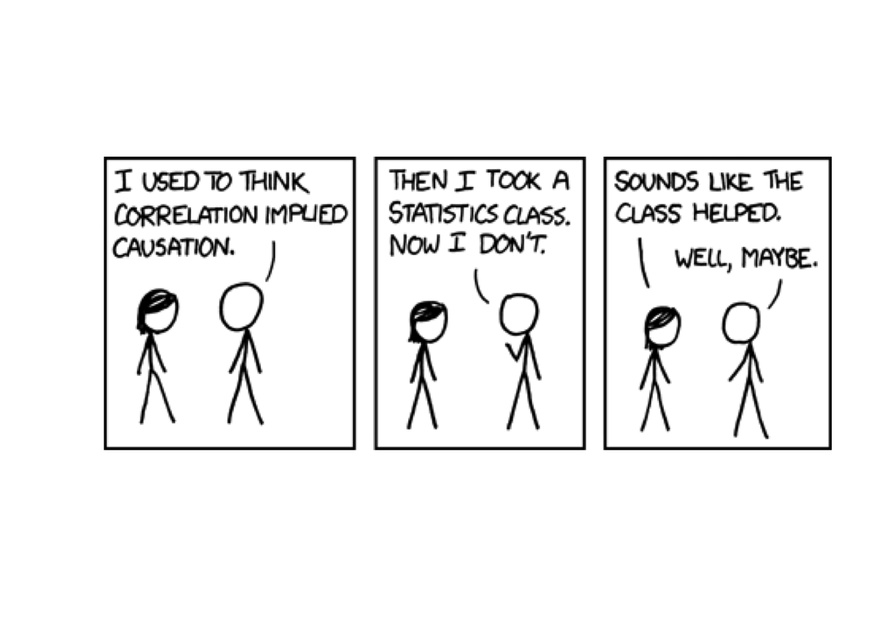

Welcome to the "Data, Science, and Statistics" blog
John D. Storey · Oct 9, 2017 · 207 words
Yet another blog
Some of the most useful and inspiring research related ideas I’ve come across the last few years I found on blogs rather than in traditional publications. Blogs provide an opportunity to communicate ideas quickly, concisely, and with the flexibility and portability of a web site. I’ve benefitted tremendously from the time and effort that others have put into their blogs. I also find myself increasingly wanting to share ideas, tips, or examples that are best suited for a blog. So it’s time for me to jump in and try to contribute to the blogosphere!
Topics I plan to write about
Here are some topics I hope to cover:
- Data science as a field
- Key concepts in statistics
- Problems in genomics I’m excited about
- How I’ve taught two courses using R Markdown
- Techniques I use when analyzing data
- Data visualization approaches
- Tutorials on R packages I’ve developed
- Mixed martial arts analytics
I may also throw in a post occasionally that has nothing to do with data or science.
How I created this blog
I used blogdown, which utilizes Hugo to create websites using R Markdown. I’ll therefore be able to include reproduicble R code and its output within my blog posts. For example…
library("RXKCD")
getXKCD(552)